Sobre o Synesis
Da planilha à linguagem — a trajetória real de um projeto nascido da pesquisa
1 A origem do problema
Como organizar, de forma rigorosa e replicável, os dados de uma pesquisa qualitativa com centenas de fontes, dezenas de conceitos e relações complexas entre eles?
Essa pergunta acompanhou o mesmo pesquisador por mais de uma década — e cada tentativa de resposta se tornou um degrau na construção do que hoje é a linguagem Synesis.
A linguagem nasceu formalmente em 2026, mas sua história não começou naquele ano. Sua arquitetura, seu vocabulário de domínio e seus requisitos metodológicos resultam de uma trajetória iniciada décadas antes, na qual duas linhas de experiência avançaram até convergir: a prática de desenvolvimento de software e a pesquisa qualitativa. BDM, SocioAtlas, o pipeline de diagnóstico socioambiental, SocioAtlas para Google Sheets e DGT7 não foram projetos desconectados, mas implementações sucessivas de um mesmo esforço. Cada uma resolveu parte do problema, revelou novos limites e deixou componentes conceituais ou técnicos que seriam incorporados ao Synesis.
2 Linha do tempo
2.1 1986 — Primeiros contatos com programação
Christian Maciel De Britto começou a estudar informática aos 13 anos. No New York Institute de Belo Horizonte, realizou os cursos Basic I e II e teve os primeiros contatos com Basic e noções de COBOL — uma linguagem organizada em blocos com delimitadores explícitos de início e fim. Décadas depois, essa forma de estruturar instruções encontraria correspondência na sintaxe do Synesis: SOURCE ... END SOURCE, ITEM ... END ITEM.
2.2 1991–1999 — ImageWare Informática: o primeiro software comercial próprio
A descoberta do dBase II Plus e do Clipper (Autumn 86, Summer 87 e Clipper 5) abriu o caminho profissional e, em 1991, levou à fundação da ImageWare Informática Ltda., empresa da qual Christian foi fundador e CEO. Em Clipper — linguagem orientada a dados e registros — foram desenvolvidos e comercializados dois produtos de software próprios, de titularidade da empresa:
- O SALA — sistema de gestão escolar, destinado a dados acadêmicos, notas e históricos;
- O SAGA — Sistema de Automação de Postos de Combustível, que chegou a ter mais de cem clientes ativos.
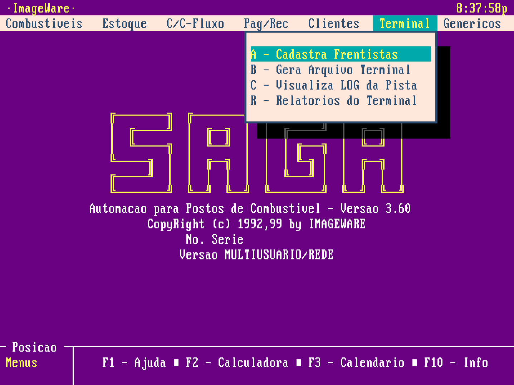
O ambiente de programação Clipper (xBase) e o sistema operacional MS-DOS tiveram papel importante nessa formação intelectual e profissional. Este artigo apresenta o contexto histórico dessa tecnologia.
Entre 1995 e 1997, a ImageWare foi incubada na InsoftBH, Incubadora de Empresas de Base Tecnológica em Informática, sediada em Belo Horizonte (MG), com apoio da Sociedade Mineira de Software — FUMSOFT — e da Universidade Federal de Minas Gerais (UFMG). Nesse período, Christian também realizou o curso Qualidade de produtos de software: normas NBR ISO 13.596 e ISO/IEC 12.119, ministrado pela MSc. Márcia Silveira de Almeida (UFMG).
Essa etapa consolidou uma experiência que reapareceria no Synesis: conceber, desenvolver e comercializar software próprio — com titularidade intelectual clara sobre os produtos —, modelar domínios reais, organizar dados estruturados e tratar qualidade de software como requisito de sistemas utilizados por outras pessoas.
2.3 1999 — Mudança de rumo
A atividade comercial da ImageWare foi encerrada em 1999, e o foco se voltou para uma caminhada Cristã, envolvendo estudos e práticas teológicas. O encontro com Jesus Cristo! Uma conversão. Esse realinhamento espiritual, intelectual e profissional alimentou uma sensibilidade hermenêutica, epistemológica e filosófica que, mais tarde, encontraria expressão na aplicação das filosofias de Herman Dooyeweerd e Dirk Vollenhoven, filósofos cristãos holandêses, ao método de pesquisa. Ao mesmo tempo, um sistema de controle financeiro em Delphi 5, desenvolvido sem fins comerciais, manteve vivo o vínculo com a prática de programação.
Essa fase aproximou duas dimensões que se tornariam inseparáveis no Synesis: a interpretação rigorosa de textos e conceitos e a construção de instrumentos computacionais capazes de organizá-los.
2.4 2011–2013 — BDM: o primeiro protótipo
Na dissertação de mestrado Sustentabilidade e Intradisciplinaridade (UFPR), dedicada aos impactos socioambientais da indústria parapetrolífera em Pontal do Paraná, surge o BDM — Banco de Dados Multimodal.
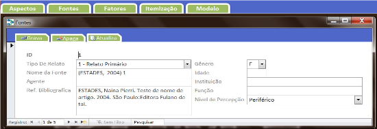
Tecnicamente simples — um front-end em Microsoft Access 2010 conectado ao PostgreSQL —, o BDM era uma solução local e individual. Seu fluxo de trabalho, porém, já continha o embrião do que viria depois: fontes classificadas por tipo, fatores vinculados a modalidades filosóficas, itens relacionados a pares de fatores com nexos positivos ou negativos e geração automática de sumários e grafos de relações.
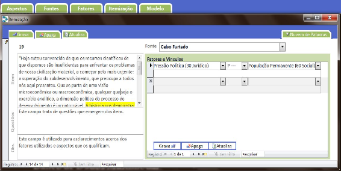
O próprio autor reconheceu uma limitação importante: o BDM permitia apenas pares de fatores por item. A pergunta que ficou em aberto — como representar redes mais ricas de relações sem perder o rigor? — moldou tudo o que veio depois.
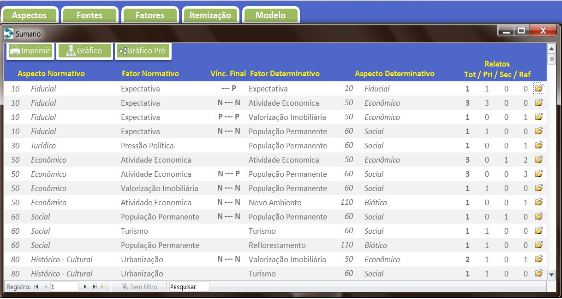
De forma ainda embrionária, o BDM organizava o conhecimento em “blocos” de fontes, itens e ontologia. Ao final, gerava um modelo analítico na forma de grafo de conhecimento, com o uso da biblioteca GraphViz.
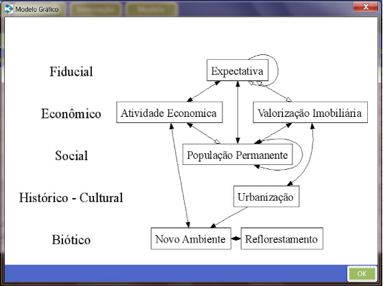
O legado do BDM para o Synesis foi a primeira definição operacional de seu domínio: fontes, itens, fatores, relações, ontologia e grafo de conhecimento passaram a formar uma estrutura integrada.
2.5 2018 — SocioAtlas: um ecossistema CAQDAS sob medida
Na tese de doutorado Pensamento Sistêmico Multimodal (UFPR), a resposta foi mais ambiciosa: o SocioAtlas, um ecossistema cujas partes foram desenvolvidas em Free Pascal/Lazarus, com banco de dados Firebird.
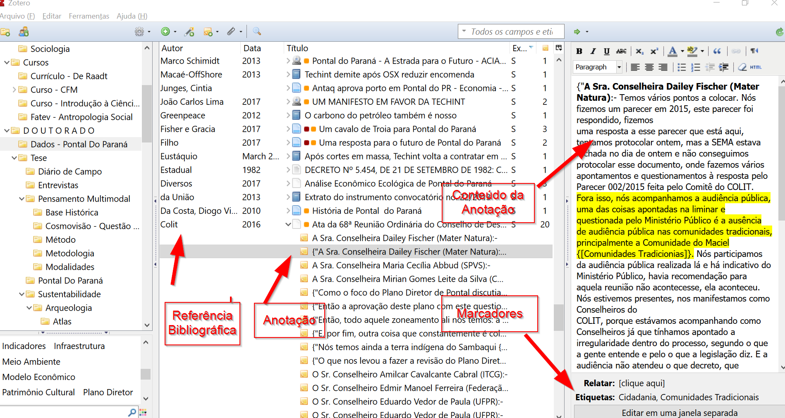
A solução era um CAQDAS (Computer-Assisted Qualitative Data Analysis Software) construído sob medida para o Método Sistêmico Multimodal (MSM). Importava dados do Zotero, organizava fontes, itens e fatores, vinculava cada fator a uma modalidade e incluía uma camada de georreferenciamento com exportação de arquivos KML para o Google Earth Desktop. A plataforma web SocioAtlas tornava os mapas acessíveis ao público.
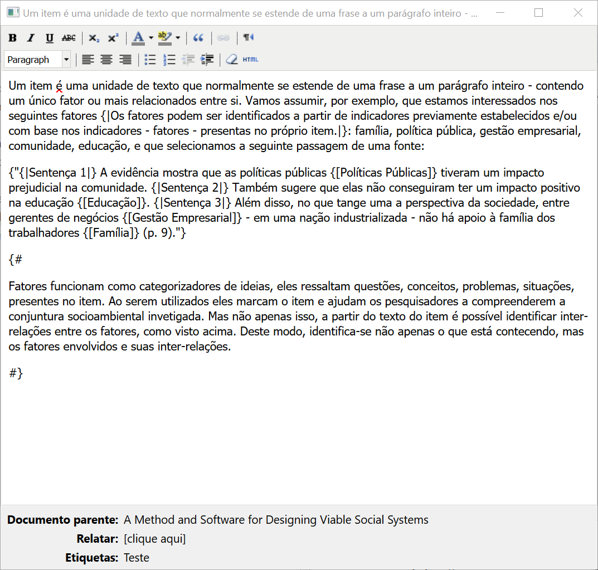
No Zotero, conceitos, comentários e memorandos analíticos eram identificados por meio de um sistema de marcadores criado para a solução. Assim, um conceito como {[Políticas Públicas]} podia ser distinguido de um comentário analítico como {#um comentário analítico#}. Estas foram as marcações adotadas:
{[ ]} - Destaque para conceitos
{! !} - Trilhas de auditoria e memorandos analíticos
{" "} - Citações
{# #} - Comentários gerais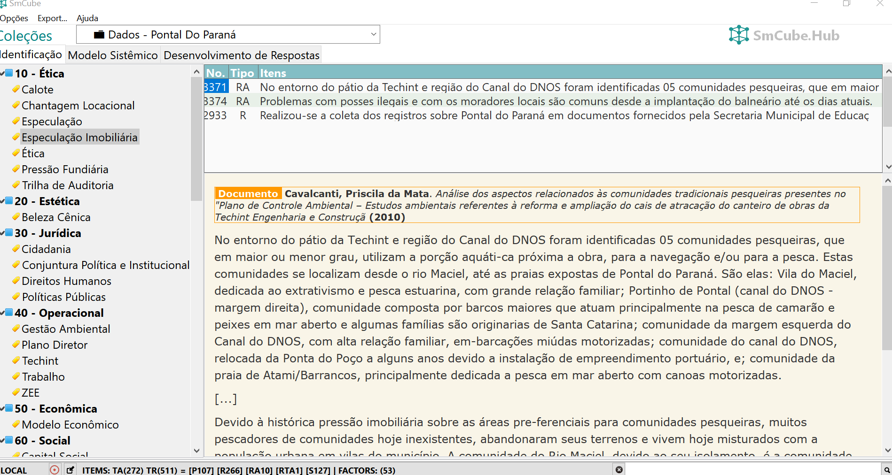
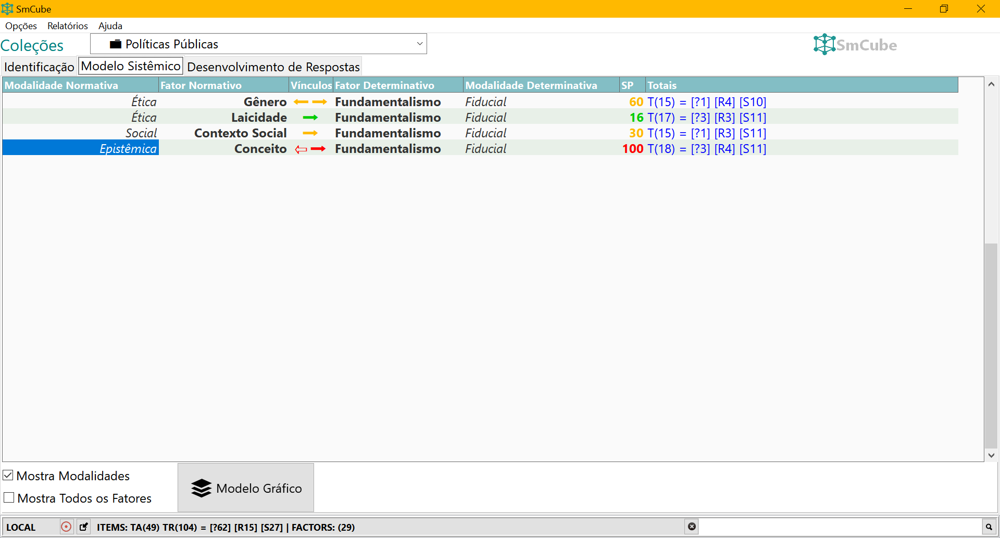
Em relação ao BDM, havia uma inovação importante: a possibilidade de incorporar dados georreferenciados. Daí o nome SocioAtlas.
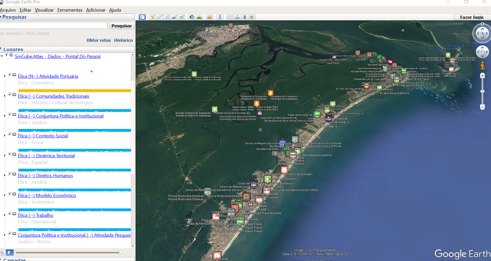
Vários componentes que reapareceriam no Synesis já estavam presentes: fonte, item, fator, trilha de auditoria, integração com Zotero e representação gráfica do conhecimento. O que faltava era portabilidade metodológica — a estrutura estava acoplada ao MSM e às suas dezoito modalidades. Adaptar o sistema a uma pesquisa diferente exigia reescrever o software.
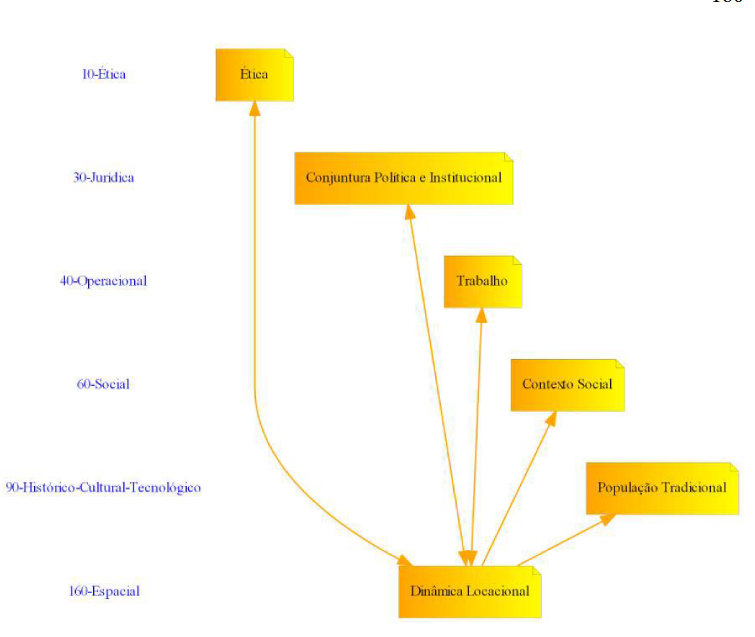
O SocioAtlas ampliou o domínio iniciado no BDM e demonstrou que um ambiente de pesquisa precisava integrar anotações, conceitos, auditoria, ontologia, localização geográfica e visualização. Sua limitação revelou o próximo requisito decisivo do Synesis: permitir que o método fosse configurado sem reprogramar a ferramenta.
2.6 2019–2020 — Diagnóstico socioambiental: o primeiro pipeline em contexto profissional
Entre 2019 e 2020, como sociólogo em uma consultoria ambiental, surgiu a primeira oportunidade de aplicar os princípios desenvolvidos nas etapas anteriores em um contexto profissional real: um diagnóstico socioambiental participativo de comunidades pesqueiras, conduzido em conformidade com normas federais de licenciamento ambiental.
O desafio era metodologicamente rico e operacionalmente exigente. As equipes de campo coletavam dados por meio de entrevistas semiestruturadas com moradores e lideranças, observação direta e oficinas participativas. O volume de material produzido — transcrições, descrições, fichas de observação — precisava ser transformado em análise estruturada, comparável entre comunidades e auditável.
Para isso foi desenvolvido um complemento para o Microsoft Word em Visual Basic for Applications (VBA). O pesquisador selecionava trechos das transcrições diretamente no documento, aplicava marcadores que identificavam o valor de significância do trecho (0, 0,5 ou 1, correspondendo a impacto nulo/baixo, moderado ou alto) e sua categoria na matriz FOFA — força, oportunidade, fraqueza ou ameaça. O complemento lia essas marcações e exportava os dados estruturados para uma planilha, onde eram contabilizados por comunidade, tema e dimensão de sustentabilidade.
O pipeline completo compreendia três camadas: a itemização — extração de segmentos individuais de texto, cada um contendo uma única ideia — seguida da codificação temática com atribuição de categorias FOFA e pontos de significância, e por fim a visualização dos dados consolidados em dashboards construídos no Power BI, que permitiam filtrar por comunidade, dimensão de sustentabilidade (física e biótica, sociocultural, econômica, infraestrutura e serviços), objetivos de desenvolvimento sustentável (ODS) e categoria FOFA.
O resultado era uma escala de sustentabilidade local calculada para cada comunidade, comparável geograficamente por meio de mapa interativo — e integralmente rastreável de volta aos itens originais, que por sua vez remetiam ao corpus textual completo das leituras técnica e comunitária.
O que esse trabalho trouxe para a trajetória do Synesis foi a validação em escala profissional de dois princípios que já estavam presentes no BDM e no SocioAtlas: a trilha de auditoria — a cadeia verificável de corpus → item → resumo → tema → pontuação — e a necessidade de que qualquer marcação inválida gerasse erro imediato, não silêncio. Um código de tema digitado incorretamente no Word criava um fator duplicado sem aviso, exatamente o mesmo problema que o DGT7 repetiria anos depois e que o compilador Synesis resolveria definitivamente com validação em compile-time. A experiência também demonstrou que a portabilidade metodológica era um requisito real, não teórico: o mesmo pipeline precisou ser adaptado para múltiplos domínios temáticos e contextos comunitários distintos, cada um com sua própria configuração de temas e categorias.
2.7 2023 — SocioAtlas para Google Sheets
Tanto o SocioAtlas original quanto o pipeline de diagnóstico compartilhavam uma limitação: dependiam de software instalado localmente ou de ambientes profissionais específicos. Por que não reconstruir a essência do método em uma plataforma acessível a qualquer pesquisador, em qualquer lugar? O SocioAtlas para Google Sheets — um complemento em Google Apps Script publicado no Google Workspace Marketplace — transformava uma planilha comum em um banco de conhecimento. O pesquisador marcava trechos no Google Docs, e o sistema importava e organizava os dados e gerava matrizes de análise multimodal automaticamente. O link para essa antiga versão ainda está disponível aqui, assim como o site com a documentação.
As anotações eram feitas no Google Docs, onde os itens eram destacados e comentados, enquanto os conceitos eram identificados por meio de tags.

O SocioAtlas lia os documentos analisados e importava os dados para uma planilha do Google Sheets, na qual eram realizadas a análise e a geração do grafo de conhecimento.

A colaboração em equipe foi conquistada. A profundidade, não. A planilha é um ambiente tabular, projetado para dados em linhas e colunas. Anotações aninhadas, relações tipadas e hierarquias de conceitos geravam fricção constante. Cada nova exigência metodológica demandava soluções frágeis. Uma ferramenta de pesquisa não poderia depender de adaptações tão suscetíveis a falhas.
Essa implementação comprovou o valor da colaboração e da acessibilidade, mas também mostrou que interfaces tabulares não eram suficientes para representar estruturas de conhecimento complexas. O Synesis herdaria a busca por portabilidade e trabalho compartilhável, substituindo a planilha por uma representação textual estruturada.
2.8 2025 — Pipeline DGT7: o formato proprietário para representação de conhecimento
Para analisar 453 artigos sobre aceitação social de tecnologias no contexto da transição energética, foi criado um novo pipeline em Python, com banco MySQL e uma linguagem de marcação própria. O sistema de marcadores criado para o SocioAtlas reapareceu nessa solução, agora como base de uma representação textual do conhecimento:
[-begin-]
[@burke2018@]
[!Sistemas de energia distribuída permitem reorganizar
estruturas de poder político.!]
[%Energia distribuída pode reestruturar o poder político%]
[#Energy System#][&influences&][#Governance#]
[-end-]O sistema funcionava, mas era difícil de ler e frágil diante de erros de digitação — [#Energy Sistem#], por exemplo, criava um fator duplicado sem aviso. Além disso, qualquer mudança na metodologia ou nos campos exigia reescrever scripts, banco de dados e plataforma web. O formato continuava preso a um modelo específico de pesquisa.
O DGT7 foi mais uma instância do padrão conceitual que vinha sendo construído desde o BDM — fontes, itens, relações tipadas, ontologia, rastreabilidade — aplicado a um corpus específico. Demonstrou que o conhecimento podia ser registrado em arquivos-texto, mas também que uma simples convenção de marcação não oferecia legibilidade, validação nem flexibilidade metodológica suficientes. A pergunta que ficou foi a mesma que havia ficado em aberto desde 2013: como generalizar esse padrão para qualquer pesquisa, sem reprogramar a ferramenta a cada novo domínio?
2.9 2026 — O nascimento formal da linguagem Synesis
A primeira tentativa de superar as limitações do Pipeline DGT7, com vistas a atender demandas de qualquer tipo de pesquisa qualitativa, foi modesta: criar um parser mais robusto para aquele formato. Entretanto, ao definir regras claras para a escrita dos arquivos, surgiu uma nova possibilidade — e uma pergunta mais ambiciosa: em vez de remendar uma marcação proprietária, por que não criar uma linguagem de verdade?
A inovação central foi separar método e conteúdo. Nos sistemas anteriores, os campos estavam embutidos nos scripts e no banco de dados. No Synesis, um arquivo de template define quais campos existem, quais são obrigatórios e quais são seus tipos. O pesquisador configura as regras da própria pesquisa, e o sistema se adapta.
O mesmo trecho passou a ser expresso na nova linguagem desta forma:
SOURCE @burke2018
description: Explora energia renovável e poder político
END SOURCE
ITEM @burke2018
citation: "Sistemas de energia distribuída permitem
reorganizar estruturas de poder político."
note: Energia distribuída pode reestruturar o poder político
code: Energy_System -> INFLUENCES -> Governance
END ITEMO arquivo permanece legível para uma pessoa. Ao mesmo tempo, se o pesquisador escrever Governance sem defini-lo na ontologia, armazenada em arquivo de formato específico, o compilador emitirá um aviso imediato. Não há ambiguidade silenciosa: ou o conceito existe na ontologia declarada, ou o compilador rejeita a anotação na origem.
Ao se tornar uma linguagem formal com gramática LALR(1), o Synesis passou a oferecer o que nenhum dos scripts anteriores poderia assegurar isoladamente: validação em tempo real no editor, preenchimento automático de campos, exportação para JSON, CSV e Excel e portabilidade para diferentes tipos de pesquisa qualitativa.
A portabilidade metodológica se confirmou quase imediatamente. A tese doutoral Administrar pela Graça: a contribuição da fé cristã para uma responsabilidade sacrificial corporativa (RSaC), defendida por Davi P. A. Brescia na UFMG em 2026 no campo das Ciências da Administração, adotou Synesis para processar um corpus de 50 entrevistas — cerca de 800 mil palavras — com mais de 10 mil conceitos de primeira ordem anotados, testificando a amplitude do escopo de aplicação da linguagem. Para viabilizar a aplicação em escala, foram desenvolvidos componentes que não existiam: o servidor LSP, a extensão para VS Code e a integração com Claude via MCP, testados em primeira mão. A correspondência entre a codificação automatizada pelo compilador e a codificação humana de referência superou 95%. Essa foi a primeira demonstração, em ambiente doutoral independente, de que o Synesis funcionava como ferramenta metodológica de uso geral — não como solução específica para um tema ou um grupo de pesquisa.
O nascimento formal do Synesis em 2026 foi, portanto, o ponto de convergência de uma construção muito mais longa. O que começou como um banco de dados local foi ampliado em um ecossistema de pesquisa, levado a uma plataforma colaborativa, convertido em marcação textual e, finalmente, formalizado como uma linguagem com gramática própria, compilador, servidor de linguagem e integração com os ambientes em que pesquisadores já trabalham.
3 Duas trajetórias, um ponto de convergência
O Synesis é o ponto em que duas trajetórias se encontram: décadas de prática em desenvolvimento de software — Basic, COBOL, Clipper, Delphi e Python — e décadas de imersão em hermenêutica, epistemologia, filosofia e metodologia de pesquisa qualitativa — BDM, SocioAtlas, pipeline de diagnóstico socioambiental, SocioAtlas para Google Sheets e DGT7.
Cada etapa deixou uma contribuição identificável. A linguagem em blocos do COBOL ofereceu uma referência inicial de estrutura. A orientação a dados do Clipper e a experiência com sistemas reais formaram a base prática de modelagem de domínio e qualidade de software. O BDM definiu fontes, itens, fatores, relações e ontologias como partes de um mesmo fluxo. O SocioAtlas integrou anotações, trilhas de auditoria, Zotero, dados georreferenciados e grafos. O pipeline de diagnóstico socioambiental validou em contexto profissional real a trilha de auditoria corpus → item → resumo → tema → pontuação e demonstrou que a ausência de validação na entrada de dados gerava erros silenciosos — o mesmo problema que o Synesis resolveria com compilação. A versão para Google Sheets introduziu colaboração e acessibilidade, ao mesmo tempo que revelou os limites das planilhas. O pipeline DGT7 levou o conhecimento para arquivos-texto e expôs a necessidade de uma sintaxe formal, legível e validável.
O uso de IA entrou nessa trajetória como parceria de implementação, não como substituição do conhecimento de domínio. Os requisitos metodológicos, o vocabulário conceitual e as decisões fundamentais de arquitetura nasceram da experiência acumulada nas implementações anteriores. A IA tornou possível traduzir esse repertório em um ecossistema de software com escala e ritmo excepcionais — pelo caminho tradicional de desenvolvimento individual, o mesmo resultado teria demandado anos.
As etapas predecessoras ocorreram em diferentes contextos — pesquisa acadêmica, atividade empresarial própria, consultoria profissional —, cada uma com seus vínculos e regimes institucionais específicos. O ecossistema Synesis em sua forma atual — compilador, servidor LSP, extensão para VS Code, pipeline Neo4j, plugin Zotero e documentação — foi desenvolvido de forma independente dessas etapas: integralmente com codificação assistida por IA, utilizando exclusivamente recursos próprios do autor, sem vinculação a projetos, laboratórios ou financiamentos institucionais. A experiência acumulada nas etapas anteriores definiu o que construir e por que construir; a IA acelerou a execução técnica.
Currículo completo do autor está disponível na plataforma Lattes.
Dr. Christian Maciel De Britto
Soli Deo Gloria